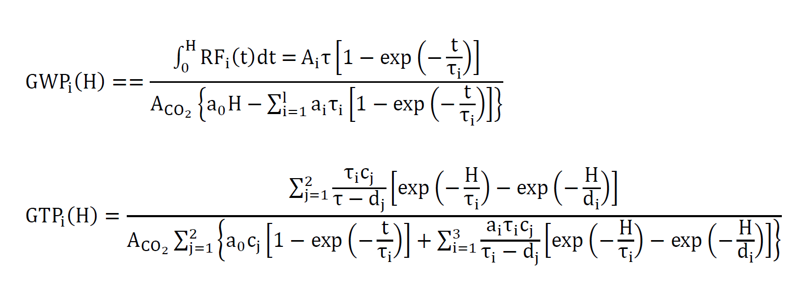

用溫室氣體指標探討氣候暖化
謝昀蓁
摘要
為了適應全球暖化的影響，制定更佳的政策與解決方式。將溫室氣體對暖化的影響程度換算成二氧化碳當量，評估不同氣體對全球溫度上升的趨勢影響。比較溫室氣體指標全球變暖潛能值（Global warming potential , GWP）與全球溫度變化潛能值（Global temperature change potential , GTP），以及考量CH4及N2O兩種氣體在大氣留存時間不同，人民生活時間尺度來估量，本研究認為GTP比GWP更適合於暖化效應評估所採用。
研究目的
燃燒燃料並排放溫室氣體到大氣後會造成氣體濃度的變化，進而改變輻射強迫（radiative forcing , RF , W m-2）導致全球溫度的改變。為了估測、比較不同氣體排放對氣候系統的潛在影響，因此由指標將各種溫室氣體轉換成較容易比對的二氧化碳當量。
研究過程與方法
以CH4與N2O這兩種溫室氣體為例，作為不同大氣留存時間之氣體相對於二氧化碳造成的溫室效應能力。並使用Keith P. Shine等人研究GWP及GTP的數據，時間範圍分別為20、100、500年，與IPCC AR5報告書中GWP曲線圖及能量平衡模型（Energy balance model , EBM）下算出的GTP進行分析與比較。公式如下：
研究成果與展望
EBM是由太陽與地球的能量輻射計算出全球地表溫度，因此本研究以EBM作為判斷GTP的準確性。GWP的定義只與溫室氣體的輻射強迫有關，而政策的決定者和人民對於溫度變化與後續對於環境、經濟的影響更相關心，因此GTP所算出的溫度變化對人類生活的影響更相關。若出現生命週期極短且強溫室效應的氣體，將導致參考GWP的決策不適合真實的狀況，因此本研究認為GTP比GWP更適合作為未來計算溫室氣體造成溫室效應能力強弱的目標與方向，不過目前國際趨勢走向多使用GWP來計算碳足跡，因此未來研究方向將試圖以GWP計算生質燃料的碳足跡，以理解替代能源的碳排放程度。